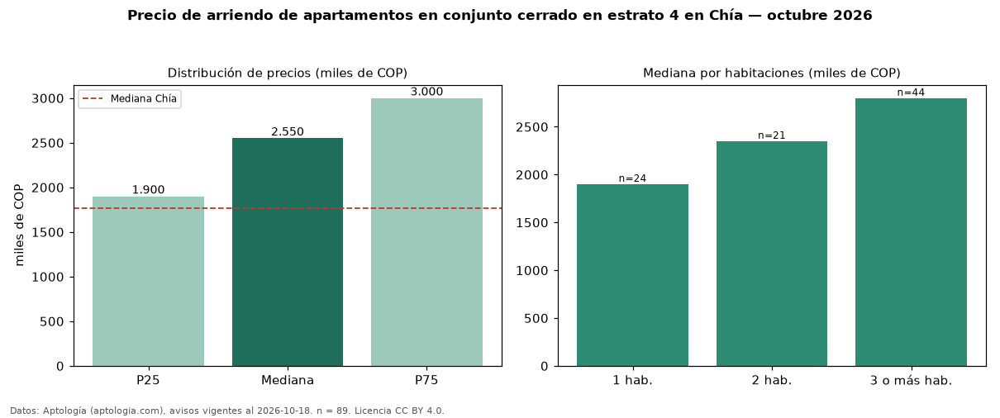

Precio de arriendo de apartamentos en conjunto cerrado en estrato 4 en Chía — octubre 2026
En Chía, la mediana de canon mensual de apartamentos en conjunto cerrado en estrato 4 es COP 2,55 millones, según 89 avisos vigentes. Prácticamente coincide con la mediana de los apartamentos en estrato 4 en arriendo de Chía (COP 2,50 millones, n = 167); este segmento reúne el 53 % de esos avisos. Por metro cuadrado, la mediana es COP 36.158/m² al mes (n = 88), 1 % por encima de los apartamentos en estrato 4 en arriendo de Chía (COP 35.897/m²). El área mediana anunciada es 68 m². El segmento con más oferta es el de 3 o más habitaciones (44 avisos, mediana COP 2,80 millones); pasar de 1 habitación a 3 o más habitaciones cambia la mediana +47 %. La administración mediana declarada es COP 363.000 al mes (n = 22), aparte del canon. La mediana de todos los apartamentos en arriendo de Chía es COP 1,77 millones (+44 % de diferencia). La mitad central de los avisos va de COP 1,90 millones a COP 3,00 millones (razón 1,6), una dispersión moderada. Datos: Aptología (aptologia.com), CC BY 4.0 — https://www.aptologia.com/arriendo/chia. Archivos: PDF, CSV con las cifras y gráfica PNG.

| Avisos únicos | 89 |
|---|---|
| Percentil 25 | COP 1.900.000 |
| Mediana | COP 2.550.000 |
| Percentil 75 | COP 3.000.000 |
| Mediana por m² | COP 36.158 |
Fuente: avisos vigentes de portales inmobiliarios recopilados por Aptología, deduplicados (mínimo 30 avisos únicos por celda). Precios pedidos, no cerrados. Fecha: 2026-10-18.